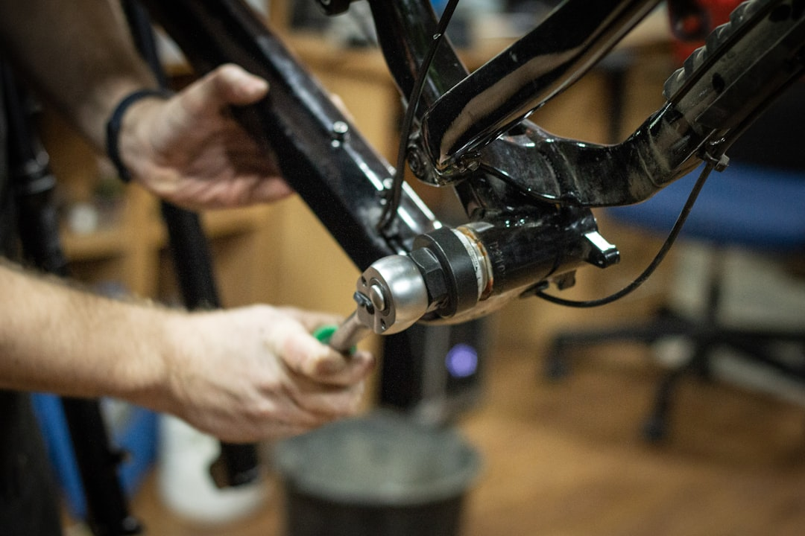

Come Risolvere i Limiti Software sulle E-Bike Bosch Smart System nelle Officine Meccaniche e Centri Assistenza

Superare i limiti dei chip fisici: la soluzione software per officine, negozi di bici e centri assistenza e-bike
- I chip fisici per lo sblocco delle e-bike Bosch causano errori anti-tuning e invalidano la garanzia, peggiorando la reputazione e incrementando costi operativi.
- L’errore 504 e la visualizzazione dimezzata della velocità creano inefficienze e frustrazione nel lavoro quotidiano delle officine e centri assistenza.
- VeloMotion offre uno sblocco software 100% invisibile, legale e reversibile con tempi rapidissimi, garantendo velocità reale a display e zero rischi per la garanzia.
Analisi approfondita della notizia e delle implicazioni operative
L’uso sempre più diffuso di biciclette elettriche con Bosch Smart System (BES3) ha portato a un’esigenza crescente da parte di officine meccaniche e centri assistenza: quella di superare limitazioni software imposte dal produttore, per offrire una migliore esperienza all’utente finale. Molti operatori tuttavia continuano a fare affidamento su soluzioni hardware, ovvero chip fisici installati sul motore o sulla centralina che forzano la velocità massima o rimuovono limitazioni.
Questa pratica si è rivelata problematica poiché i chip fisici attivano sistemi anti-tuning, in particolare l’errore 504 che blocca le funzionalità del motore, causando malfunzionamenti e disservizi importanti. Inoltre, i tachimetri delle e-bike spesso segnalano velocità dimezzate a causa dell’alterazione hardware, creando discrepanze con le reali prestazioni del mezzo. Il risultato sono clienti insoddisfatti, interventi di garanzia negati e ritardi nell’assistenza.
Di conseguenza, la presenza di chip fisici nell’ecosistema Bosch Smart System non solo genera inefficienze operative, ma mette a rischio la reputazione dell’officina e la soddisfazione del cliente, condizioni critiche per la competitività in un mercato in rapida crescita.
Le conseguenze e i costi di non agire
Ignorare il problema significa dover fronteggiare diversi effetti negativi: innanzitutto, l’installazione di chip fisici invalidano automaticamente la garanzia Bosch, esponendo le officine e i centri assistenza a responsabilità finanziarie in caso di guasti post-intervento. Inoltre, l’errore 504 – tipico degli interventi hardware non conformi – blocca il motore, costringendo i meccanici a interventi più lunghi e complicati, che aumentano i costi di manodopera e riducono la produttività.
Un’altra conseguenza rilevante è la riduzione di velocità indicata dal tachimetro, che da un lato confonde l’utente finale e dall’altro genera numerose segnalazioni di malfunzionamento da gestire. Tutto questo amplifica il carico di lavoro e crea inefficienze che si traducono in ritardi e perdita di clienti.
Dal punto di vista economico, le officine rischiano di perdere margini preziosi e costretti a investire in costosi interventi aggiuntivi per rimuovere i chip o sostituire componenti danneggiati. Dal lato reputazionale, non rispondere efficacemente a queste problematiche può alienare i clienti più attenti alla qualità e alla sicurezza.
Come VeloMotion risolve il problema
VeloMotion si presenta come la soluzione nativa di RM Studio per superare questi problemi, evitando tutti i rischi legati all’utilizzo di chip fisici. Il cuore dell’offerta è uno sblocco software al 100% invisibile, sviluppato specificamente per il Bosch Smart System (BES3). Tale sblocco consente di raggiungere la velocità massima reale di 32 km/h, rispettando la normativa e senza mai rilevare tracce di modifiche hardware.
La tecnologia software di VeloMotion garantisce l’assenza completa di chip fisici o componenti aggiuntivi, eliminando così l’errore 504 soprattutto problematico nelle installazioni tradizionali. Inoltre, il tachimetro mostra sempre la velocità reale, assicurando trasparenza e affidabilità all’utente finale.
Un ulteriore vantaggio di VeloMotion è la reversibilità in soli 2 minuti tramite una semplice connessione USB-C, che permette alle officine di tornare rapidamente alla configurazione originale Bosch in caso di necessità o controlli. Questa caratteristica rappresenta un vantaggio competitivo decisivo per chi cerca di erogare un servizio rapido, efficiente e senza rischi legali o tecnici.
I pacchetti adottati da RM Studio per le officine partono da €290 a sblocco, generando un margine superiore a €100 per ogni bicicletta assistita. Questa proposta di valore consente di bilanciare profittabilità e qualità, elemento chiave per il successo nel mercato attuale.
| Gestione Tradizionale (Chip Fisici) | Con VeloMotion (Sblocco Software) |
|---|---|
| Installazione complessa di chip hardware che invalidano la garanzia Bosch. | Sblocco invisibile software con piena conformità e mantenimento della garanzia originale. |
| Errore 504 frequente a causa del riconoscimento delle modifiche hardware, incide sull’affidabilità del mezzo. | Nessun errore anti-tuning; sistema stabile e sicuro con visualizzazione corretta della velocità. |
| Tachimetro mostra velocità dimezzata, confondendo l’utente e complicando l’assistenza. | Visualizzazione reale a 32 km/h, per un’esperienza utente trasparente e affidabile. |
| Tempi di intervento lunghi, smontaggi complessi e costi operativi elevati. | Intervento rapido e reversibile in 2 minuti via USB-C, aumento della produttività e riduzione dei costi. |
💡 Ti è stato utile questo approfondimento?
Condividilo con un collega o un amico del settore Officine Meccaniche, Negozi di Bici e Centri Assistenza E-Bike a cui potrebbe interessare!
FAQ: Domande frequenti per professionisti Officine e Centri Assistenza E-Bike
1. È legale utilizzare lo sblocco software di VeloMotion su e-bike Bosch BES3?
Assolutamente sì. VeloMotion rispetta gli standard normativi e non manipola fisicamente il sistema, mantenendo intatta la conformità e la garanzia Bosch.
2. Quanto tempo serve per tornare alle impostazioni originali Bosch dopo lo sblocco?
Il ripristino è semplice e veloce: bastano 2 minuti tramite porta USB-C senza bisogno di operazioni meccaniche invasive.
3. Quali vantaggi ha l’officina nell’adottare VeloMotion rispetto ai metodi tradizionali?
Oltre a margini superiori sull’intervento, VeloMotion riduce drasticamente errori, tempi macchina fermi, aumenta la soddisfazione cliente e protegge la reputazione del centro assistenza.
Inizia Subito
Pacchetti officina da €290 a sblocco (+100€ di margine per ogni bici).
Fonti Ufficiali e Risorse Esterne
Scopri l'Intelligenza Artificiale per la tua attività
Ottimizza i processi e aumenta le vendite con le soluzioni B2B di RM Studio.
Scopri VeloMotion